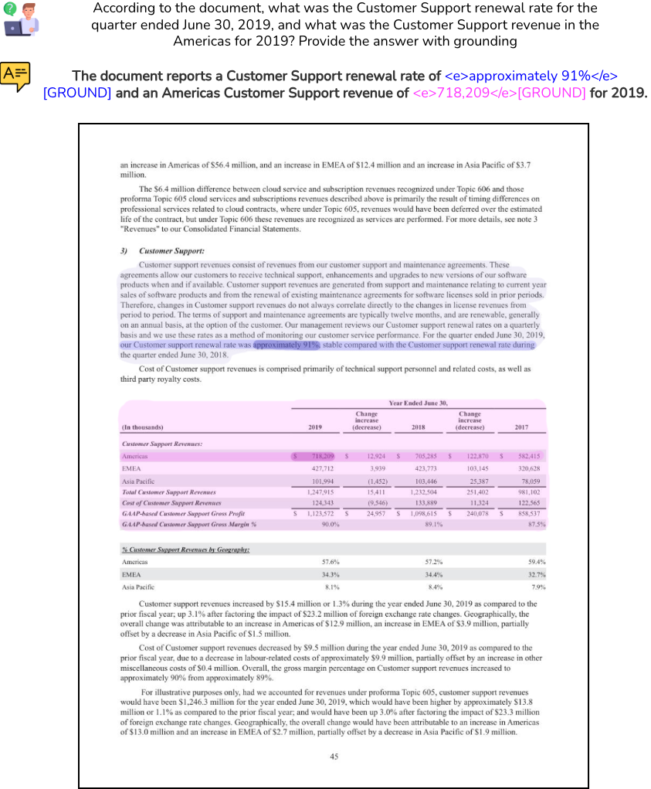
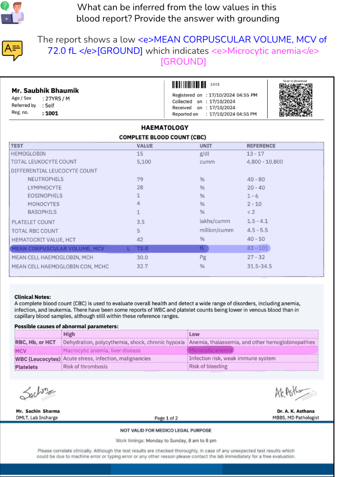
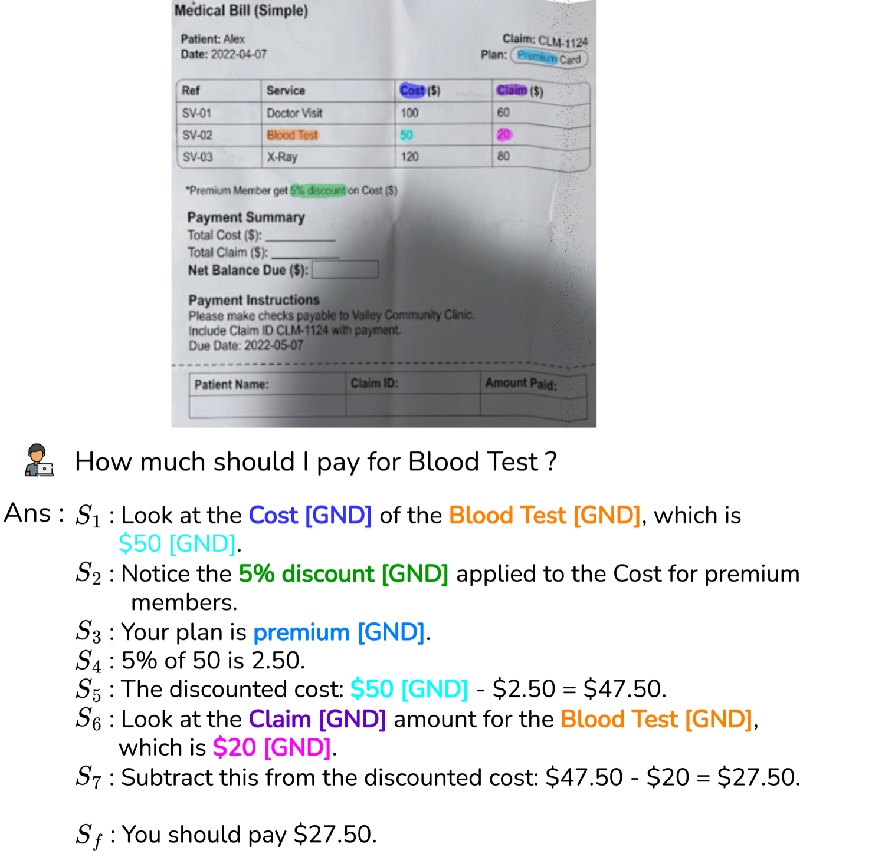
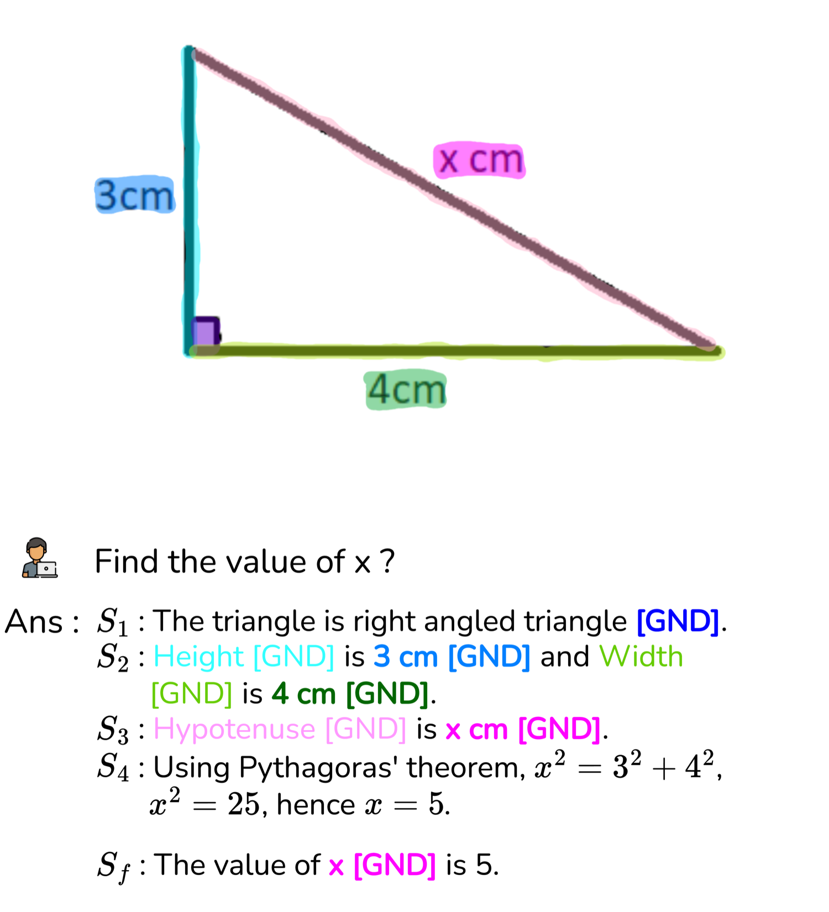
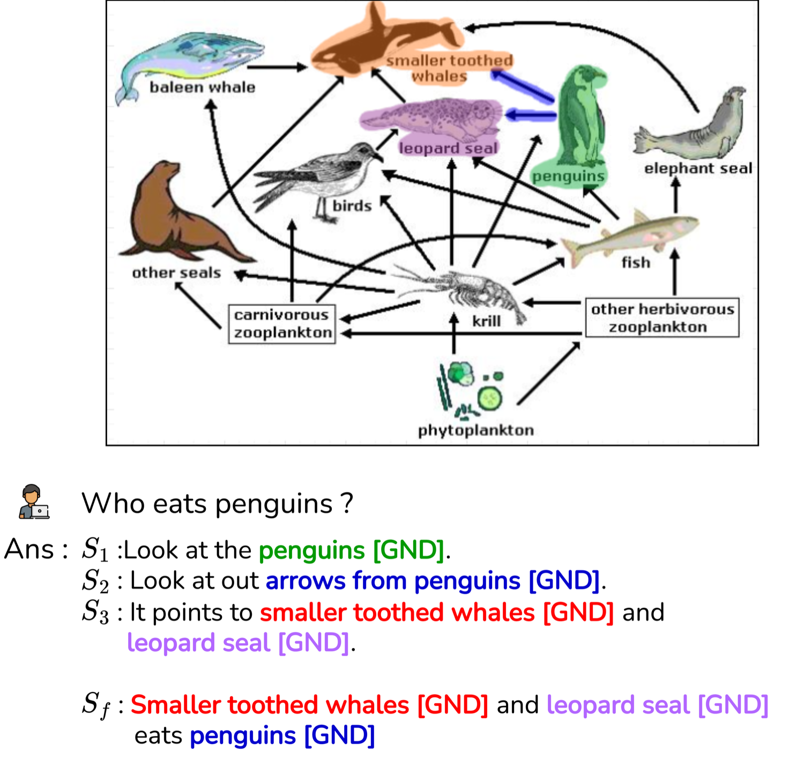

In an insurance claim, a loan file, or a compliance certificate, an answer without evidence is a liability. A model that says "the claim is consistent" but cannot point to which line, which cell, or which chart wedge it read is impossible to audit — and impossible to trust in the workflows that actually run Indian institutions.
Patram Grounder is built for exactly this. Every answer is emitted alongside pixel-accurate evidence masks — not loose rectangles, but shapes that follow curved text, table cells, pie slices, and flowchart nodes. And because a single field is sometimes not enough, Patram Grounder can ground multiple spans at once, at three levels of scope — the exact phrase, the full line, or the surrounding block.
Patram Grounder unifies two capabilities that used to need two separate systems — precise multi-span answer grounding and step-wise grounded reasoning — into one BharatGen model with a single toggle. You choose what comes out; the evidence comes free either way.
One model. Two ways to answer.
The same weights, the same document, the same question — you decide how much of the model's working you want to see. This toggle is the whole idea.
Fast, point-precise answers
The model returns the answer directly, with each answer span linked to its evidence mask on the page. Multi-span, and adjustable across three scopes — phrase, line, block. Ideal for high-volume extraction and field verification.
output
Step-by-step, every step grounded
The model thinks out loud — a numbered chain of reasoning where each step highlights the exact region it used before committing to a final, grounded answer. Ideal for charts, flowcharts, multi-hop questions, and anything a human must audit.
🎯 Multi-span grounding
One question, several answers, several places on the page — Patram Grounder grounds each answer span to its own distinct evidence region in a single pass.
🔍 Multi-granular scope
Evidence at three nested levels — the precise phrase, the full line of context, or the surrounding block — so the grounding matches the question, from a single value to a whole clause.
📊 Beyond text
Grounds graphical and structural elements too — chart bars and pie slices, legend keys, flowchart nodes, diagram arrows, curved and rotated text — with masks, not bounding boxes.
🧭 Grounded reasoning
Turn on Mode B and the answer becomes an auditable trail: each intermediate step names its evidence and shows it, so a reviewer can follow the model's logic region by region.
See the toggle work
Pick a document, choose a mode, and press Run. Watch the same model either answer directly with grounded spans, or reason step-by-step — each grounding sweeping across the exact evidence on the page.
The two outputs come from a single set of weights. Mode A is the fast path; Mode B exposes the model's grounded working for audit — same evidence, more of the trail.
Grounded, on real documents
A sample of Patram Grounder's output on real, messy documents — the same model in both of its modes. Click any panel to enlarge.
Grounded Answer — multi-span, multi-granular
Direct answers with evidence masks


Grounded Reasoning — step-wise, every step masked
Chain-of-reasoning grounded to evidence


The PatramQA data family
Patram Grounder is trained and evaluated on PatramQA — one grounding-native corpus, organized as a single tree. Every split hangs off the same root, so answer grounding, graphical grounding, reasoning, alignment, and evaluation all share a consistent annotation standard.
PatramQA # grounding-native document QA corpus — 500K docs · 3.5M grounded QA pairs │ ├── PatramQA-Answer multi-span, multi-granular grounded QA · phrase ⊂ line ⊂ block 2.0M pairs │ ├── PatramQA-CoT step-wise grounded chain-of-reasoning, each step masked to evidence 1.5M pairs │ ├── PatramQA-Graphic charts, pie slices, flowchart nodes, diagram arrows, curved text included │ ├── PatramQA-Pref preference pairs for alignment — answer, reasoning & grounding jointly 20K pairs │ └── PatramQA-Bench human-verified benchmark — answer, reasoning & grounding quality 5K docs · 15K QA
📦 PatramQA — training corpus
Answer + CoT + GraphicLarge-scale, layout-aware grounded QA built through a unified data engine spanning reports, forms, tables, charts, flowcharts, and curved-text documents — annotated with pixel-level masks at phrase, line, and block scope.
📊 PatramQA-Bench — evaluation
Human-verifiedA diverse, human-verified benchmark that scores all three faces of the model at once: answer quality, chain-of-reasoning quality, and grounding fidelity — across text-rich documents, charts, flowcharts, and tables.
Benchmarks
Evaluated on PatramQA-Bench against leading proprietary models. Commercial models can answer, but their grounding collapses — they cannot reliably point to where. Figures are illustrative placeholders for this preview, pending the final evaluation run.
| Model | Answer (AQ) | Reasoning (CQ) | Grounding (GQ) | Graphical IoU |
|---|---|---|---|---|
| ①Patram Grounder | 85.8 | 82.0 | 81.9 | 70.5 |
| Gemini 3 Pro | 84.2 | 75.2 | 11.4 | 55.4 |
| GPT-5 | 82.9 | 76.8 | 4.8 | 9.3 |
| Claude Sonnet 4.5 | 79.9 | 71.3 | 7.1 | 12.6 |
Proprietary models reach competitive answer quality but their grounding quality stays near single digits — they cannot produce faithful evidence masks. Grounding is where a purpose-built model separates from a general one.
Where it makes a difference
Three workflows where an answer alone is not enough — someone downstream has to see the evidence, or follow the reasoning, before they can act.
An adjudicator cannot sign off on "consistent" — they have to see it. In Mode B, Patram Grounder walks the reasoning and highlights each piece of evidence it used, so the human reviewer audits a trail instead of trusting a verdict.
Field extraction that can be re-checked in seconds. In Mode A, every extracted value comes back with its evidence mask, so an ops reviewer verifies a figure by glancing at the highlighted cell — no hunting through the page.
Charts, pie slices, flowchart nodes and legends defeat box-based grounding — a wedge is not a rectangle. Patram Grounder grounds the graphical element itself with a mask, so an answer read off a chart can be traced back to the precise slice, bar, or node it came from — the kind of question that shows up constantly in Indian financial and government reporting.